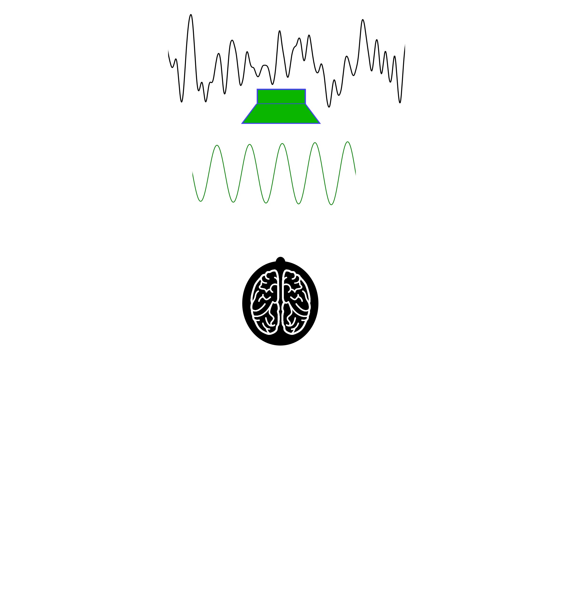

Binaural processing in the human brain and its relation to speech understanding.
Jaime A. Undurraga, Jeremie Lienart, David McAlpine
2019-11-11
Cocktail-party problem (Cherry, 1953)
How do we recognize what one person is saying when others are speaking at the same time?
When everyone at a well-attended party talks at the same level, the speech of the attended talker at a distance of 0.7 m has a signal-to-noise ratio (SNR) of about 0 dB (the background is as intense as the target talker Plomp 1977). This level is sufficient to give adequate intelligibility for listeners with normal hearing (Miller, 1947).

It is well established that hearing capabilities decline with ageing and/or following noise exposure (Vercammen et al. 2018).
- Normal hearing (NH) listeners report great difficulties in understanding speech, particularly, in environments with background noise despite having normal audiometric thresholds (Füllgrabe, Moore, and Stone 2015)
- Animal studies have shown that noise exposure can lead to 40 - 50 % of loss of AN synapses - Synaptopathy (e.g. Kujawa and Liberman, 2015, 2009; Liberman and Kujawa, 2014).
- Histological data seems to confirm this effect in “Normal Hearing” human cochleas (Viana et al., 2015).
- Synaptopathy affect all types of AN fibers: high-SR / low- and medium-SR fibers ratio of about 1:3 (Marmel et al. 2015).
Noise exposure may reduce the number of synapses but also induce transient loss of cochlear Schwann cells resulting in permanent auditory temporal deficits (Wan and Corfas 2017)

ITDs and ILDs

Binaural Release from Masking (or Binaural Squelch; or Hirsh effect)
 
Spatial Release from Masking


ITD pathway

- The initial site of ITD processing is considered to be the MSO.
Interaural-phase Modulation Following Response (IPM-FR)
Objective measures of binaural processing can be obtained by using stimuli where the temporal fine structure is manipulated so that the perceived location of the sound image changes periodically (e.g. 6.7 Hz) over time.

Interaural-phase modulation following-responses (IPM-FR)

Behavioural Measures
Digits in noise test
- Adaptive staircase procedure (2-down/1-up) with variable adaptive step (Leek, 2001; Denys et al. 2019)
- Three randomly chosen digits were presented in background speech-shaped noise.


- EEG: 64 channels Biosemi system, fs: 16384 Hz.

Screening

Speech reception thresholds

- No effect of presentation was no significant (F(5, 352.6) = 1.7, p = 0.14)
- Trial number had a significant effect (difference < 0.88 dB) (F(2,370.4) = 22.5, p < 0.001)
- SRT improvement ranged between 4.1 and 8.8 dB
Fishing p-values (the only thing I can go fishing as a vegerarian!)

SRT vs PTA HG1 < 20 <= HG2
Participant’s were grouped according to SRTs and PTA: HG1 < 20 <= HG2

- SRTs differences between HG1 and HG2 did not differ
SRT vs PTA low frequency
Participant’s were grouped according maximum PTA for frequencies <= 1 kHz and splitted by median

- HG had a small (0.6 dB) but significant effect (F(1,21) = 4.4271, p = 0.0476).
- Applying the same criteria interaural asymmetry was not significant (p = 0.08).
- Applying the same criteria for frequencies > 1 kHz did not show any significant effect.
SRT vs DP low frequency
Participant’s were grouped according minimum DP for frequencies <= 1 kHz and splitted by median
- HG had a small (0.6 dB) but significant effect (F(1, 21) = 5.1397, p = 0.034)
EEG responses


SRT vs EEG

- Best ITM-FR amplitude, SNR or global field power correlate significantly with SRT.


- Excellent correlation at group level (-0.43 * ITD-FR Amp dB)
- Good correlations at subject level: ** 17 (AMP, SNR) - 18 GFP significant correlations **